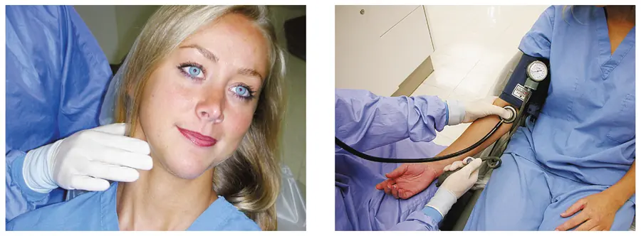

نسخه استخراجشده؛ ترجمه یا تأیید علمی انجام نشده است. وضعیت: captured
مرد ۶۷ سالهای در اتاق انتظار ناگهان روی صندلی میافتد. صدایش میزنی و جواب نمیدهد. قفسهی سینهاش تکان نمیخورد و فقط هر چند ثانیه یک نفس بریدهبریده میکشد. آیا این «نفس کشیدن» است؟

نه. نفس بریدهبریده و نامنظم (gasping) تنفس طبیعی نیست و در ایست قلبی شایع است. در ایست قلبی قلب خون را پمپ نمیکند: نبض و فشار نیست، تنفس قطع میشود، سیانوز پیدا میشود و مردمکها گشاد میشوند.
اشتباه رایج: وقت گذاشتن برای پیدا کردن نبض. اگر در ۱۰ ثانیه نبض را قطعاً حس نکردی، فشردن قفسهی سینه را شروع کن.
ترتیب احیا در ایست قلبی C-A-B است: اول فشردن قفسهی سینه، بعد راه هوایی و تنفس.
از کسی که آموزش احیا ندیده، فشردن قفسهی سینه بدون تنفس بهتر از هیچ کاری است؛ ولی تیم مطب دندانپزشکی باید CPR کامل با تنفس را بلد باشد.